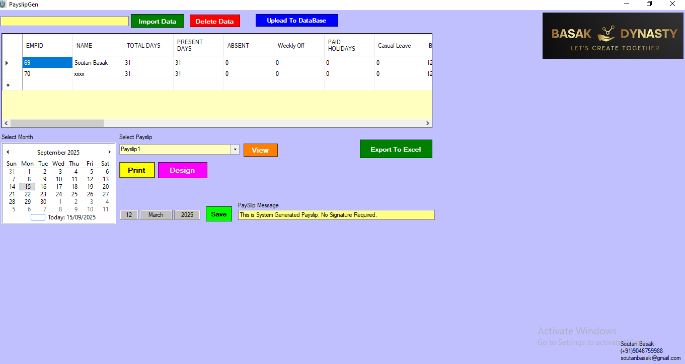

Payslip Generator
A VB.NET desktop application developed for HR and finance teams to automatically generate employee payslips. The system calculates gross salary, deductions, and net pay, then creates ready-to-print PDF payslips.
Features
- Employee master data management
- Salary calculation with allowances and deductions
- Bulk PDF payslip generation
- Integration with attendance/biometric data
- Secure payroll record storage
Screenshots

Technologies Used
VB.NET, Windows Forms, MS SQL Server, Crystal Reports
Challenges & Learnings
Faced challenges in integrating biometric attendance data into payroll calculations and ensuring accurate tax deductions. Learned to optimize SQL queries for payroll processing and design Crystal Reports templates for professional payslip output.